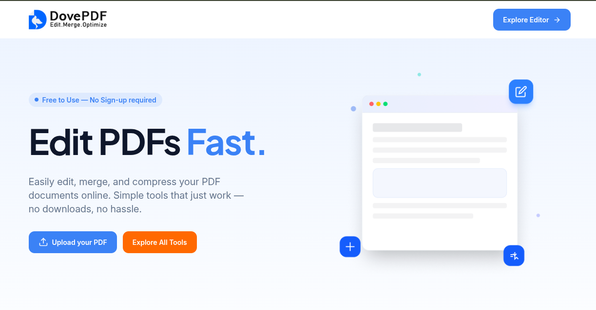
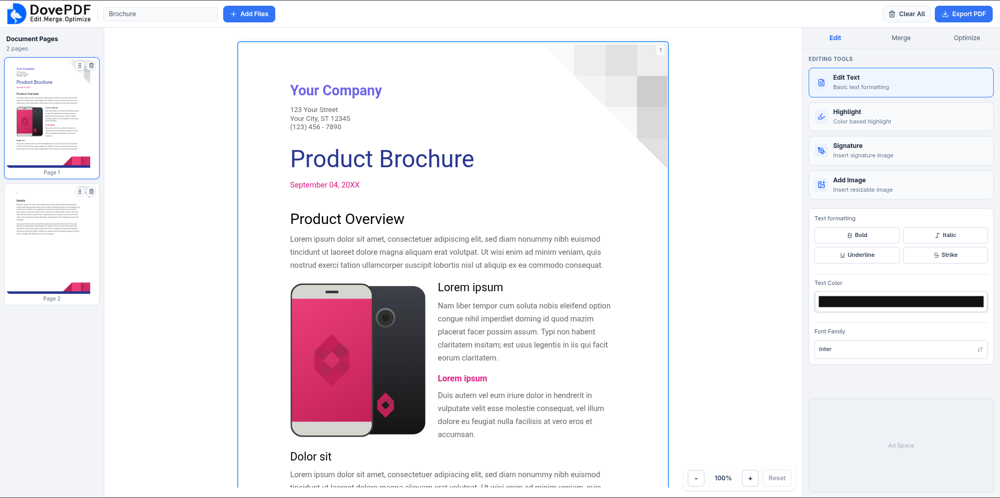
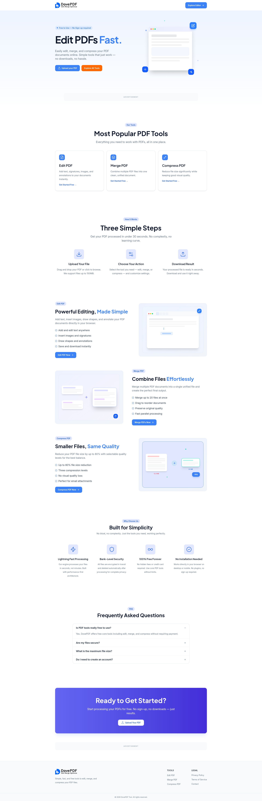

Dove-PDF Tools Platform
A comprehensive online PDF editor and toolkit that enables users to upload, edit, merge, compress, and optimize PDF files directly in the browser. Built with modern TypeScript stack for scalability and performance, featuring a clean interface and monetization through ad placements.
PDF upload & editing, multi-file merging, compression, scalable architecture, and ad integration.
Overview
Dove-PDF is an online PDF tools platform that simplifies document management for users. Upload PDFs or images, edit content, merge multiple files, compress for optimization, and download processed documents—all through a clean, intuitive web interface.
Vision
Create a simple yet powerful PDF toolkit accessible to everyone, with a scalable architecture ready for future tool additions.
User Experience
Clean, distraction-free interface that guides users through upload, processing, and download workflows with minimal friction.
Outcome
A production-ready PDF platform with core editing features, monetization through ads, and extensible architecture for new tools.
Problem / Challenge
Users need quick, reliable tools to manage PDF documents without installing desktop software. The challenge was to build a web-based platform that handles PDF uploads, editing, merging, and compression efficiently while maintaining file quality and security. The system needed to process files client-side when possible for privacy, handle large files gracefully, provide instant feedback, and support a scalable architecture for adding more PDF tools. Additionally, the platform required ad integration for monetization without compromising user experience.
Solution
I delivered a comprehensive PDF tools platform using a modern TypeScript stack. The frontend is built with React and Vite, featuring drag-and-drop file uploads, real-time processing feedback, and a clean TailwindCSS interface. I integrated PDF-lib for client-side PDF manipulation, enabling editing, merging, and compression without server round-trips for enhanced privacy. The backend API, built with Express and tRPC, processing coordination, and serves optimized files. The monorepo architecture with Turborepo ensures maintainability and easy addition of new tools. Google Ads integration provides monetization while maintaining a clean user experience.
My Role
Fullstack Developer
- Architected the PDF processing pipeline with client-side and server-side components
- Implemented PDF upload, editing, merging, and compression features using PDF-lib
- Built drag-and-drop file upload interface with real-time progress feedback
- Designed clean, intuitive UI with TailwindCSS for seamless user workflows
- Integrated Google Ads placements strategically for monetization
- Created scalable backend API with tRPC for file handling and processing coordination
- Optimized file processing for performance and memory efficiency
- Set up monorepo structure for easy addition of future PDF tools
Tech Stack
Key Features
- PDF and image upload and file validation
- PDF editing capabilities including text, annotations, and page manipulation
- Merge multiple PDF files into a single document with custom ordering
- Compress and optimize PDF files to reduce size while maintaining quality
- Real-time processing feedback with progress indicators
- Instant download of processed files with proper naming
- Clean, intuitive interface designed for simplicity and ease of use
- Client-side processing for enhanced privacy and faster operations
- Google Ads integration for monetization without disrupting workflow
- Scalable architecture ready for additional PDF tools and features
My Contributions
- Built the complete PDF upload system with file validation, and preview
- Implemented PDF editing features using PDF-lib for text, annotations, and modifications
- Created PDF merge functionality with reorderable file list and batch processing
- Developed compression algorithm integration to optimize PDF file sizes
- Designed and built the clean, user-friendly interface with TailwindCSS
- Integrated Google Ads with strategic placement for optimal monetization
- Implemented file processing pipeline with progress tracking and error handling
- Set up backend API with tRPC for file storage and processing coordination
- Optimized client-side processing for performance and memory management
- Created extensible architecture for easy addition of new PDF tools
Challenges & Solutions
Large file handling and performance
Problem: Processing large PDF files in the browser can cause memory issues and slow performance, leading to poor user experience.
Solution: Implemented chunked file processing with Web Workers for heavy operations, added progress indicators, and optimized memory usage by processing files in streams where possible.
PDF manipulation complexity
Problem: PDF editing, merging, and compression require complex operations while maintaining document integrity and quality.
Solution: Integrated PDF-lib for robust client-side manipulation, implemented validation checks at each step, and created fallback server-side processing for complex operations.
Monetization without disruption
Problem: Integrating ads for revenue while maintaining a clean, user-friendly interface without disrupting the workflow.
Solution: Strategically placed Google Ads in non-intrusive locations, implemented lazy loading for ad scripts, and ensured ads don't interfere with core PDF processing functionality.
Results / Impact
Complete PDF toolkit
Delivered all core features: upload, edit, merge, compress, and download with intuitive workflows.
Fast processing
Client-side processing provides instant feedback and enhanced privacy for users.
Scalable architecture
Modular design allows easy addition of new PDF tools and features as needed.
Monetization ready
Google Ads integration provides revenue stream without compromising user experience.
Screenshots / Demo



What I Learned
This project deepened my understanding of client-side PDF manipulation, file processing optimization, and memory management for large files in the browser. I gained valuable experience with PDF-lib, Web Workers for performance, and balancing feature richness with simplicity in user interface design. The challenge of integrating monetization while maintaining user experience taught me important lessons about strategic ad placement.
Project Information
Dove-PDF is a production-ready online PDF tools platform that demonstrates modern web development practices with a focus on user experience, performance, and scalability.